One short video of a car goes in. Out come clean photos of every side of that car, standing in a professional studio, with number plates covered and the car itself exactly as it was shot.
Based on the end-to-end test run of 24 Nov 2026: a 27-second phone video of a Maruti Suzuki Baleno 2022.
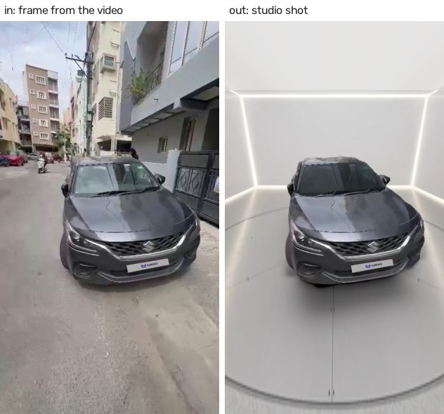
Left: one frame of the video, on a street. Right: the same car, same pixels, in a studio.
Car photos are usually taken wherever the car happens to be: a street, a driveway, a parking lot. Other cars, people, buildings and number plates are all in the shot, and every photo looks different. Turning that into a clean, consistent set of studio photos by hand takes a person with editing skills, for every car.
Someone walks around the car once with a phone. The system picks the best frame for each side of the car, covers the number plates, lifts the car out of the street, and stands it in a studio room that is drawn again from the exact height and angle the phone was held at, with a shadow under the car. No person edits anything.
Each studio picture shows the car from the same viewpoint as the phone did, so the car looks like it was actually photographed there, not cut and pasted.
These photos document the car's condition, so every dent and scratch must stay exactly as shot. The car is never redrawn, recoloured, relit, sharpened or generated. It may only be turned once to stand level, shrunk once (never enlarged), and cropped at the photo's edge. The single approved exception (Nov 2026) is a fixed dark tint on the windows only. Automatic tests check this pixel for pixel.
| Part of the run | Time |
|---|---|
| Step 1: pick one frame per side | 18.8 s |
| Step 2: cover the number plates | 2.4 s |
| Steps 3–12: cut-out, camera, 3D fit, studio, paste (6 photos × 3 studios) | 677.6 s |
| …of which waiting on the cloud models | ~44 s per photo |
| Cloud models: 37 calls in all | ~$0.23 |
Input video: 464 × 832 pixels, portrait, from a phone. The heavy lifting runs on an ordinary laptop processor; four open models run on a pay-per-use cloud service (fal.ai). If the cloud fails, each step falls back to the laptop.
From hundreds of near-identical video frames to one good photo of each side.
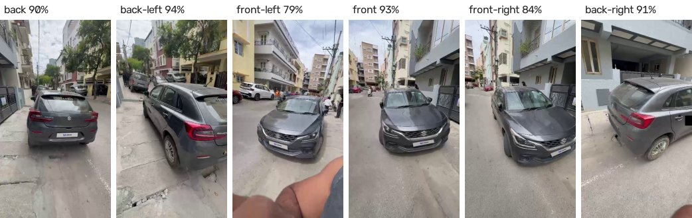
Takes one frame every half second (54 frames from the 27 s video). An image-recognition model scores each frame for 8 views: front, back, left, right and the four corners. The best frame for each view is kept; weak guesses (below 30% sure) are not used.
A video has hundreds of nearly identical frames. A buyer wants one clean shot per side, and every later step costs time and money per photo. The side label is also kept as a first guess for which way the car faces in step 8.
The walk-around video.
One photo per side, named after its side and confidence, plus a list of sides not found. This video gave 6 sides: it has no straight left or right view (best score 13%).
Privacy first: no readable plate leaves the system.
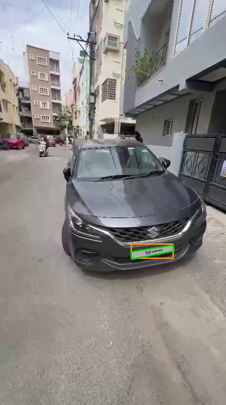
The photos picked in step 1.
The same photos, same names, with every plate covered, plus a log of where each plate was and how it was covered.
Decide, pixel by pixel, what is the car and what is not.
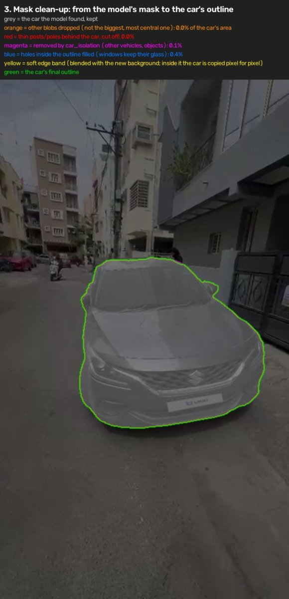
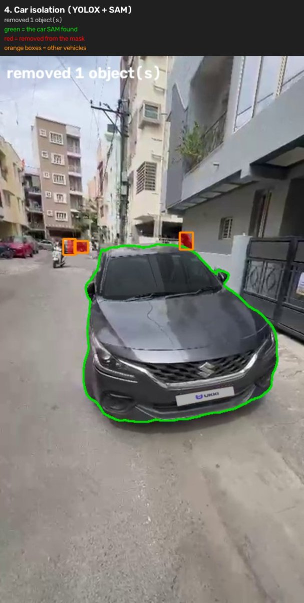
Step 3. A cut-out model (BiRefNet) marks every pixel as car, background or edge. A clean-up drops stray specks, cuts off poles touching the car, fills the window holes and keeps a thin soft edge.
Step 4. A second model (SAM 3), asked for "car", outlines every car in the photo. The one matching the cut-out is kept; anything stuck to it is removed.
Every later step needs the exact outline of the car. A ragged edge shows as a halo in the studio, and a hole in the glass would let the studio show through the car. Step 4 stops a parked car behind, a scooter or a passer-by being pasted into the studio as part of "the car".
The plate-covered photo.
The car's outline (a mask): this car only. If the cloud fails, a smaller model on the laptop takes over and the photo is flagged.
The one approved change to the car's pixels, and only on the glass.
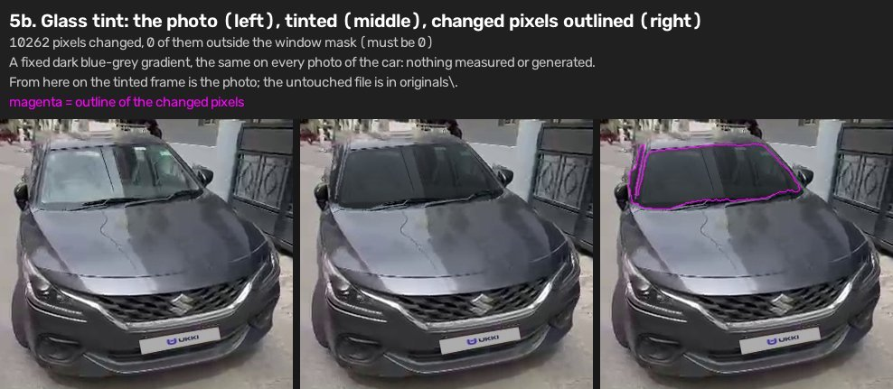
SAM 3 is asked for "car window" and "windshield". Inside that outline only, pulled slightly away from the paint, the glass gets one fixed dark blue-grey shade: 85% tint, 15% of the original showing through, with soft edges.
Glass shows what was behind the car: the street, buildings, other cars. A street seen through the windscreen of a car in a white studio gives the edit away at once. The tint is the same on every photo: nothing is measured or generated.
The photo and the car's outline from steps 3–4.
The tinted photo, used from here on. The untouched original is kept alongside it. If the glass can't be found, nothing is tinted and the photo is flagged.
Where the phone was, how high, and how it was tilted, for every photo.
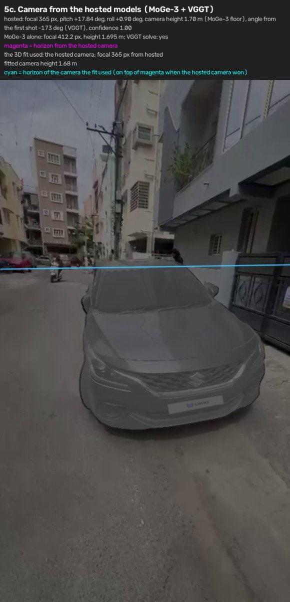
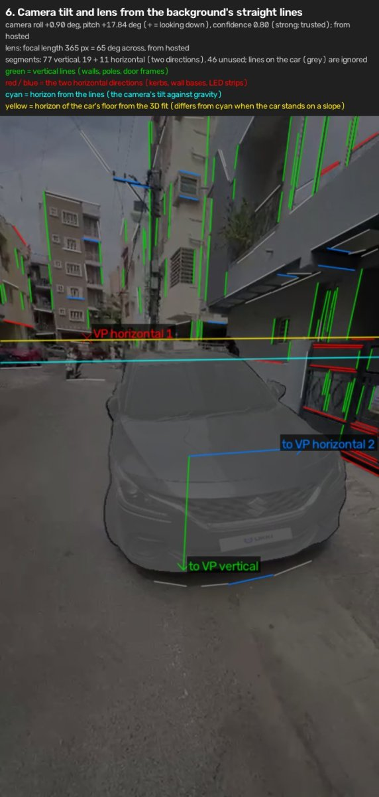
Step 6. Two cloud models (MoGe-3 and VGGT) turn the photos into 3D and give the phone's height, downward angle, sideways tilt and lens zoom. The straight lines in the background are measured on the laptop as a check; if they disagree by more than 5°, the lines win and the photo is flagged.
Step 7. All photos come from one phone, so one lens setting is agreed for the whole set.
A car shot from 1.7 m looking down, pasted into a studio seen at eye level, looks like a cardboard cut-out. These numbers decide how the studio is redrawn, where its floor is and how the car is levelled. Pooling the lens setting turns many noisy guesses into one good one.
The tinted photos and the car's outline (so lines on the car itself are ignored).
A camera per photo. Front photo: 1.70 m high, looking 17.8° down, tilted 0.9°. 4 of the 6 photos used the cloud camera; the 2 back photos kept their own lines.
Give the flat cut-out a direction and a place on a real floor.
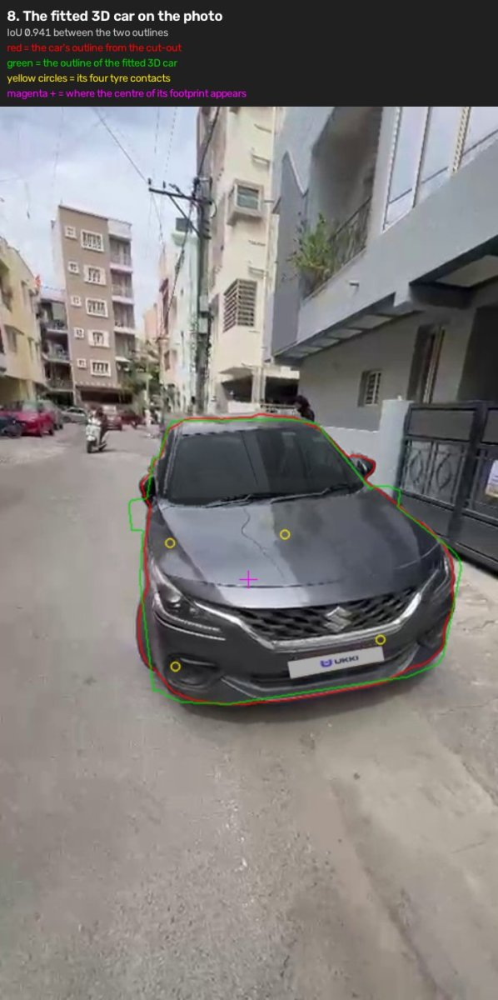
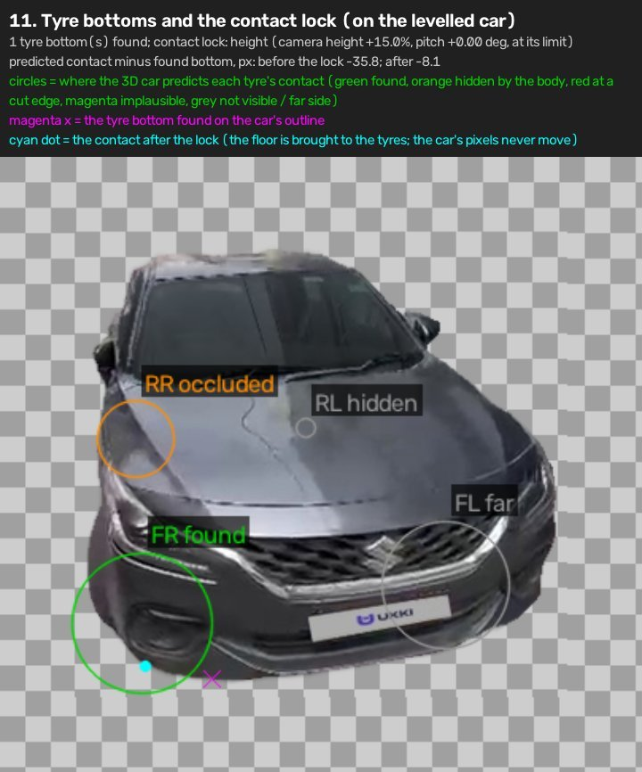
Step 8. A simple block model of the car is built from its real length, width, height and wheelbase, then turned through every angle until its outline best matches the photo's (scored 0 to 1).
Step 9. If the phone was held crooked, the car is turned once, as a whole, to stand level. The tyre bottoms are found and the 3D model is pinned to them.
A flat cut-out doesn't know where its wheels touch the ground or which way it faces. Without this the car would float above the studio floor or sink into it, sit on a slope, and get a shadow in the wrong shape.
The cut-out, the camera, the car's real size, and the side label from step 1.
Which way the car faces, how far away the phone was, the levelled car and its tyre points. Front photo: match 0.94, phone 3.95 m away. Matches below 0.90 are flagged.
The studio is moved to match the car, never the other way round.
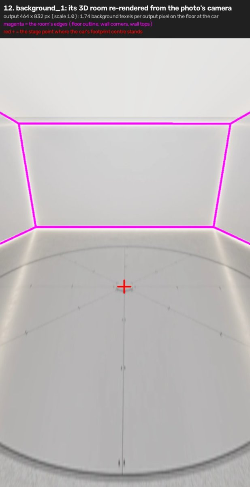
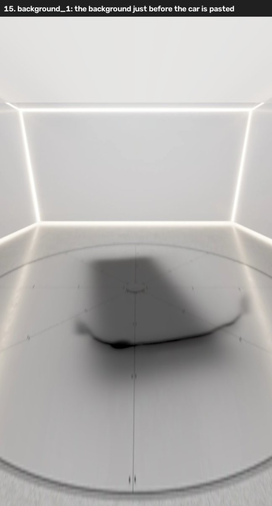
Step 10. Each studio picture was measured once as a 3D room: floor, walls, ceiling. The room is drawn again from this photo's camera, using plain geometry on the laptop (no AI). Parts the studio picture never showed are filled from nearby texture and recorded.
Step 11. A shadow shaped by the car's footprint, and on glossy floors a faint reflection, are drawn on the floor.
A car shot from above on a background shot at eye level is the classic sign of a fake. Redrawing the room makes floor, walls and horizon agree with the car for every angle. A car with no shadow looks like a sticker; drawing it on the background keeps the car's pixels untouched.
The studio picture and its 3D room, the photo's camera, the car's position.
The studio background, seen from the phone's viewpoint, with shadow, ready for the car. Too much filled-in area is flagged.
The car in the result is the car in the photo, pixel for pixel.
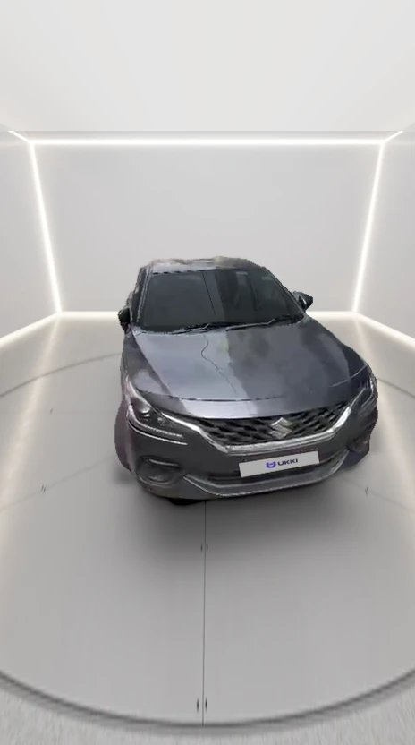
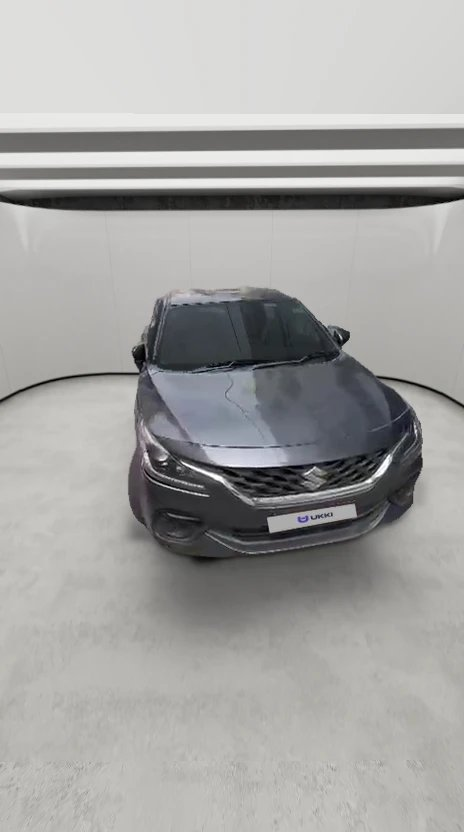
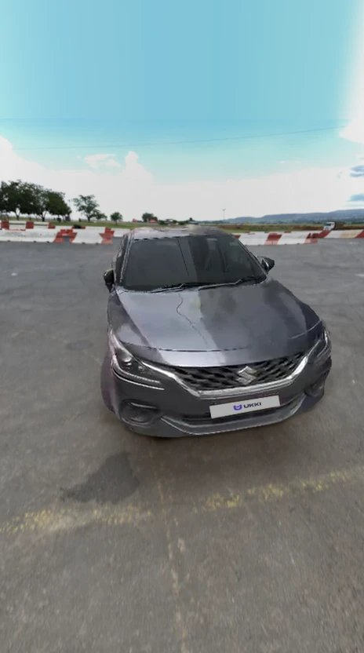
The levelled car is shrunk once, by plain averaging, to the room's scale. It is never enlarged. It is placed on the finished background at its pinned floor position, and nothing is drawn after it. If the car ran off the edge of the photo, the result is framed the same way, so no missing part is ever invented.
It keeps the result honest. Apart from the one shrink, every dent and scratch is exactly as shot. Automatic tests check this pixel for pixel.
The levelled car from step 9 and the finished background from step 11.
One image per photo per studio: 6 × 3 = 18 images in the test run.
A run never stops on one bad photo; it tells a person where to look.
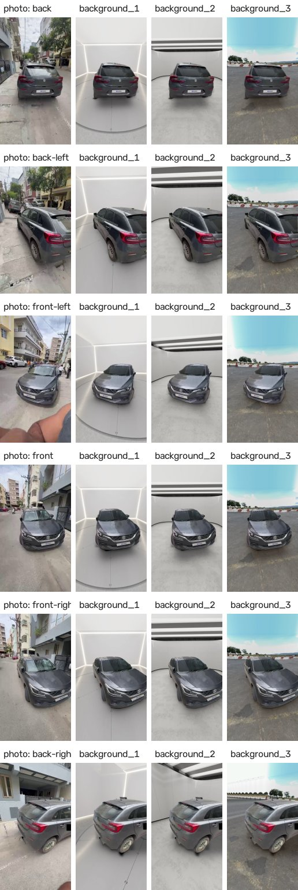
Writes one line per photo per studio with all the measurements, timings, cost and a flags column. It then builds a single web page showing, for each photo, a picture of every step and every result, plus the time and cloud spend of the run.
Unsure photos are placed and flagged, never silently dropped. A person checks the few flagged photos instead of all of them, and the cost line keeps the cloud spend visible.
Everything the steps above produced.
The studio images, the results table with flags, and the step-by-step report page (the pictures in this document come from it).
| Item | Test run, 6 photos |
|---|---|
| Cloud calls | 37 |
| Window and car outlines (SAM 3) | $0.12 |
| Camera from one photo (MoGe-3) | $0.09 |
| Cut-out (BiRefNet) + camera from all photos (VGGT) | $0.01 + $0.01 |
| Total | ~$0.23 (~$0.04 per photo) |
Every cloud answer is saved, so running the same photos again costs $0. A budget of $3 per car stops cloud calls if reached, and the run carries on with the laptop models.
weak-fit 3D match below 0.90 · camera-lines-fallback cloud camera overruled by the photo's own lines · hosted-cutout-failed cloud cut-out failed, laptop used · glass-mask-failed windows not tinted · invented too much studio filled in